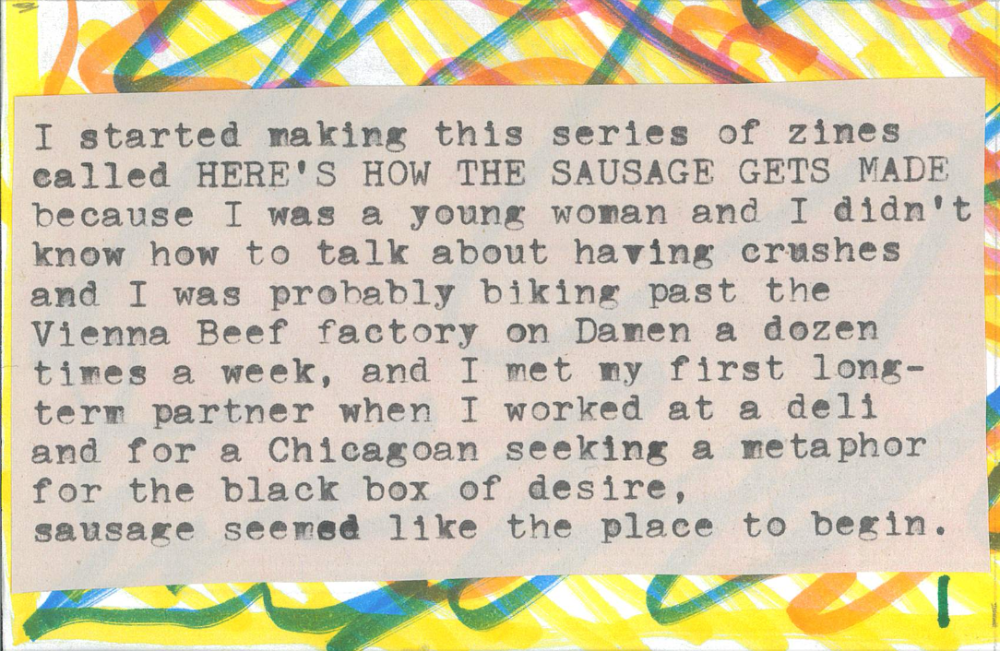

<DOCTYPE html>


<head>
    <title>HOW THE SAUSAGE GETS MADE</title>
    <meta name="viewport" content="width=device-width, initial-scale=1.0">

    <link rel="icon" type="image/png" href="images/hotdog.png">

    
    <link rel="stylesheet" type="text/css" href="style.css">

</head>


<body>


    <div class="outer">
        <div class="content">

            

        </div>

        <div class="footer">
            <p class="nav"><a href="index.html"><- prev</a> | <a href="02.html">next -></a></p>
        </div>
    
   </div>
</body>


</html>
